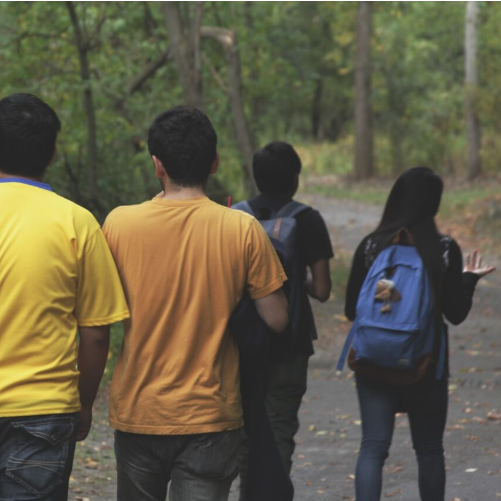

Build Blue has hosted several events since 2015, our largest event to date, the Social Innovation Summit has drawn in students from the UTSC community to discuss social issues. We have also hosted smaller events and workshops to develop students' skills. Most recently, Build Blue presented a launch party to raise awareness for our club and offer an opportunity for students to take a break from school.
Igniting ideas for change
An interactive, hands-on learning experience
for students that have an interest in making a positive difference in the community andd want to discover
new ways to engage and transform communities by tackling our most complex issues. Build Blue brought
students together to engage in critical thinking and open dialogue on how students can catalyze social
innovation to help mobilize a positive impact in their communities.

The #SCWALKS: Rouge Valley Adventures seeks to promote community, sustainability, healthy active lifestyle, creativity and sociability. Whether you're an environmentalist, hiker/explorer, athletic walker, photographer or a stressed out student/faculty, everyone is welcomed and share their university experiences. As weeks go by, school will be increasingly stressful with midterms coming in soon. We want to be able to create a space and time for all students to come, destress, meet and explore/hike the Rouge Valley with a very diverse group of people!
In January 2016, Build Blue jumped into the new year by hosting a Launch Party open to all students at UTSC, over 30 students came to the event to discover the opportunities of social innovation and play games to get to know our team. The food, refreshments, and awesome games were a great start to the year, and Build Blue will be bringing many more events to the UTSC community!